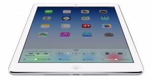

Music technology in context
I’m writing this in early November 2013. If you are a young musician just taking your first steps in your journey of learning, making, performing and recording music, it’s quite probably that, outside of pictures, you may never have seen a cassette deck or a reel-to-reel multi-track recorder or a hardware compressor or a patch bay or, beyond the live desk found half way back from the stage at a big gig, even a multi-channel hardware mixing desk.
Of course, all these real, physical objects still exist and, in any half-decent commercial recording studio, they will all get put to regular use (well, perhaps with the exception of the cassette deck). But, unlike 25 years ago, when budding musicians had no choice but to start with budget versions of these hardware items, now there is an alternative that is more accessible, affordable, convenient and, in many ways, more powerful; computer software.
The personal computer is now at the very heart of the majority of recording studios, it is often a key part of live sound and lighting systems and, for some musicians, it is an integral part of their sound source. And yes, while you can still be blown away by a solo singer playing an acoustic guitar or piano, in ways almost too numerous to mention, computer technology is now central to many of the processes by which a modern musician gets the job done.
Most recording studios – commercial, project or home/hobby – are now built around computer technology.
Powerful personal computers used to be expensive; now, in relative terms at least, they are cheap. Almost any new computer purchased today would be capable of running sophisticated music software without breaking into a serious sweat. That specialist music software also used to expensive, difficult to use and with limited choices. And while it still can be expensive, the music software market has expanded, diversified and matured; there are brilliant options in almost everyone’s price point.
The ‘post-PC’ era
However, if you believe Tim Cook, we are now entering the ‘post-PC’ era (and by PC, he means personal computer, rather than implying what flavour of operating system it might be running). As Apple’s CEO, and with something of a vested interest in promoting the iPad (and other iOS devices), you might argue that ‘well, he would say that wouldn’t he’ but, personally, I think he’s right. For increasing numbers of people – musicians included – their ‘go to’ computing device is no longer a desktop or laptop computer; it’s a tablet or a smartphone.
These devices are more portable, more self-contained, more fun to use, can be your camera, video camera and your phone, can be stuffed with software that is often available at pocket-money prices and, right now at least, are just way cooler than your average desktop computer. They are not better for everything; give me a desktop computer with a mega-sized monitor every time if I’m editing complex video or puzzling over financial stuff in a big spreadsheet. But for lots of more routine tasks – reading email, browsing the web, viewing photos, checking Facebook or Twitter updates, playing games, watching TV, reading a book, or listening to music, a tablet computer or smartphone does an excellent job and, internet connectivity permitting, any of these tasks can be done just as easily on the bus, in a coffee shop or sitting on a beach as they can sat in your easy chair at home. And so people are buying into these mobile devices either instead of, or as well of, more traditional desktop or laptop computers. Those people include musicians.
Technology for musicians
Being a musician doesn’t mean that you have to get involved with technology; a PhD in IT is not a prerequisite for success in the modern music business. But, in so many ways, technology in general – and technology aimed specifically at musicians – can be a tremendous resource if making music is your passion.

Computer software – such as Cubasis by Steinberg under iOS – now provides a complete recording studio environment within which to work.
While there are many examples that could be used to illustrate this point, perhaps the most obvious one is in the recording of music. Recording to large format, multi-track analog tape still has its uses and many very experienced professionals involved in multi-track recording simply love what tape does to the sound of a recording. But digital recording to a computer-based system, using software that recreates all the functions of a traditional, hardware-based multi-track recording system, is now the way the vast majority of music recordings get made. It’s generally cheaper, more accessible and, when it comes to editing your recordings, simply way more convenient and flexible. In short, if you are starting out in multi-track recording today, the odds are you will do it via a computer-based recording system rather than one using analog tape.

It’s not just recording software that runs on a computer; virtual instruments such as synths or guitar amp modelling (as shown here) and virtual effects are also commonplace, whether on the desktop or under iOS.
But it’s not just in recording; virtual instruments, whether based upon samples or synthesis, mean that computers can now be used as sound sources; connect up a MIDI keyboard (or some other sort of MIDI controller such as a MIDI drum kit or MIDI guitar) and your computer can give yoo access to almost any sound you can imagine. Or find a way to plug your guitar in and make use of any one of the remarkable amp, speaker and effects modelling software packages that will give you a history of classic guitar tones for the price of a budget combo. Record with it or even play gigs with it; the choice is yours. And these examples are just the tip of the iceberg…
So – finally – why iOS?
All of this music technology has been made possible by the rise of the personal computer. But, as described above, we now have the ‘post-PC’ era and a generation of musicians who’s other computing needs mean they are as likely to own a tablet computer or smartphone as they are a desktop or laptop computer. And, of course, just like software developers in other fields (office applications, photo and video editing, drawing and design, etc.), companies working in music technology have been quick to exploit the potential of this new market. Almost all the types of software that have become so familiar to musicians on desktop computers now have equivalent versions available for tablet and smartphone devices.
Only, in the world of mobile computing, not all things are equal. While Android devices are brilliant (and very often competitively priced) for many tasks, when it comes to making music (as opposed to just listening to music), right now, iOS wins hands down. There are various issues here but one of the most fundamental is simply how efficiently the operating system handles audio data. This may well change with time but, if you want to get into the whole world of making music on your mobile device right now, an iOS device is the way to go.
Android is improving as a music-making platform but, for mobile music makers, iOS is the dominant platform.
And the inherent advantage that the operating system provides mean that, at present, almost all the music software developers working in the mobile environment create for iOS rather than one of the other mobile platforms. As a consequence, if you are using an iPad or iPhone or iPod Touch, there is simply more music software available to choose from and, in general, its functionality is more sophisticated.
Whatever your take on the business model operated by Apple, it is difficult to deny the elegance of the products, both in terms of the physical design or the software that runs on them. With the iPad, the company created a new class of product – the tablet computer – capable of doing most of the tasks associated with a desktop or laptop computer but in a compact, portable format with a brilliant touchscreen interface that makes using software an incredibly intuitive process and opens up new ways to control it.
What this means is that iOS is not just a possible alternative to a desktop computer for a musician; if developers exploit the touchscreen functionality to its full potential, an iDevice can do new things that, at present, a traditional desktop or laptop computer simply can not. Musicians are being presented with touchscreen instruments that are ‘played’ in all sorts of non-traditional, but incredible intuitive and flexible, ways. Even if you can’t play a piano or a guitar or a drum kit or a trumpet, you can still make music with an iPad or iPhone.
Yes, you can argue about how this might undermine the need for traditional music skills but, if it opens up the wonderful world of music making to a wider audience – and captures that audience and a young age – personally, I think that’s a good thing.
The price is right
There is another compelling reason why musicians – aspiring or otherwise – might be attracted to the iOS platform. While an iPad is not a causal investment (well, not for most of us at least), like that desktop or laptop computer, it may be an investment you decide to make for reasons over and above its music making potential. But once you have made that initial investment in the hardware, compared to the world of desktop music technology, the music software is astonishingly cheap.

If you want some app suggestions to get you started, the Music App Blog free guide might be just the thing.
While there are apps (and some very good ones at that) that head off into the heady height of the £30+ bracket (or the equivalent $/€ figure – expensive for an iOS app but most definitely ‘budget’ when compared to desktop software prices), there are plenty of others from £0.69 upwards that are priced for pocket money but still deliver some seriously good performance. In short, compiling a suite of apps to satisfy your music making needs is not going to break the bank (and if you are getting started and want an initial ‘app shopping list’, sign up for our email list and get our free guide to the best of the current crop on the iTunes App Store). Yes, if you want to do this all properly, there are other items you will need to budget for – audio or MIDI interfaces, microphones, a monitoring system, etc. – but you would need these items with a desktop system as well. However, the software – the iOS music apps – offer some real gems at ‘buy on a whim’ prices.
Desktop or tablet?
Apple’s Garageband for iPad – while not the most sophisticated recording software available for iOS – still offers an incredible range of creative possibilities.
As I hope I’ve explained, there are a number of reasons why musicians – new and experienced – might be attracted to the iPad as a music making tool; it is ultra portable, offers a brilliant user interface, it’s silent in operation and the apps themselves are amazingly cheap. So why are the majority of technology-savvy musicians still doing the serious stuff on a desktop computer?
Cubasis can provide multiple audio and MIDI tracks and – as shown here – also includes a range of very playable virtual instruments. Click on the image to see a full size version.
The answer is, of course, that when it comes to sheer CPU grunt, software sophistication, on-screen real estate and data storage, a desktop computer still leaves the current generation of tablet computers trailing in its dust. If you need this level of sophistication, the power to run dozens of audio tracks or multiple virtual instruments all at the same time, terabytes of sample storage or to spread your workspace over three 27” high-resolution monitors, then an iPad probably isn’t going to cut it.

Want access to more tracks than some musical icons of the past? Then software such as Auria (shown here) or Cubasis on an iPad can do just that…. Click on the image to see a full size version.
However, not everyone needs that power and, if you are taking those first tentative steps into what technology can offer you as a musician, then such a powerful system is going to be overkill. As an entry point (and a serious entry point at that) the iPad is a very viable option. It can run some excellent virtual instruments (and some of these really are the equal of their desktop equivalents), it can offer you modelled guitar amps, cabinets and effects and, if you want a multi-track audio recording environment (and don’t forget, the Beatles, the Rolling Stones and Jimi Hendrix started on 4 track based systems), then it can offer you that as well; Cubasis, Auria and Garageband can all turn an iPad into a sophisticated recording studio. As a starting point – as an introduction to just what technology can bring to your music making process – it is a brilliant, flexible, cost-effective and portable choice.
And it is, of course, almost inevitable that the format is just going to get better; faster, higher resolution and greater storage capacity. The new iPad Air is an example of that next step up in power and performance. As a music making platform, the iPad has incredible potential…. but it’s also capable of delivering on that potential right here and right now.
Convinced? Then go and get started and become an iOS musician… :-)


{kind=link}
{kind=link}
{kind=link}
{kind=link}
{kind=link}
Great article. I started making music in the days of the tascam 4 tracks days ( when going to a 24 track studio was way out of my budget) , then getting into sequencing keyboard workstations, and eventually seeing my studio grow into a decent mid level studio with a Mackie 24 channel analog mixing board, outboard gear, then going into the digital multitrack recorders like adats, the Roland vs800, and finally getting a Mac, running digital performer, Logic and a ton of virtual instruments and effects, gigs of sound libraries and samples, and sometimes just have too many options to chose from. While I enjoyed having any sound I wanted ! It sometimes felt like a blessing and a curse. And sometimes I actually missed just committing to the sound I wanted and just recording it to tape, vs midi. Yes I still have my desktop studio, but I got an Ipad a year ago and I’m using my desktop less and less. I have several Daws, drum machines, amp simulators, synths, that I don’t miss being tied down to my desktop studio at all. And now when I do decide to work on the Mac! my ipad is right there in the loop. Instead of recording my part via midi, where the temptation to quantize everything is always there I’m just recording the sounds from my ipad instruments to an audio track. While I do lose the flexibility that midi offers I feel more like I’m capturing the moment for what it is, committing to the sound I’m using. I having abandoned midi all together, I still record some songs that way, but the ipad has given me a really great option of finding a great synth sound, amp sounds or what ever and just going with it and committing.
Hi Striz… thanks for taking the time to comment. Your experience is one I’ve heard others express also – that sometimes, a top-flight desktop music production system just provides too many choices – and the creative flow gets sidetracked by trying endless combinations of things that eventually lead nowhere. Maybe the somewhat more limited palette offered via an iPad or iPhone is good in that respect? That said, I’m also with you that there is no absolute need to see the two levels of technology as separate platforms that can not interact. I use my iPad as a sound source for my desktop system just as you describe… and I also run a virtual control surface on it to act as a remote for Cubase. Keep making music and keep reading :-) best wishes, John
Talking about GarageBand, is it possible to use it as an Audio (instead of MIDI) sequencer for my digital piano? I mean, I need sequencer for my digital piano, which doesn’t have sequencer. And I want to record sounds (audio) of my digital piano.
So, long time passed since that article. Interesting, what would you say about iPad Pro 12.9″ for example with its screen and enormously increased power.
Thank you for taking time to write this artical, John… others will really enjoy this. I’m setting up a recording studio in my room via iOS so this was really useful, thank you!